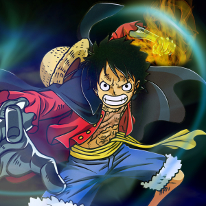
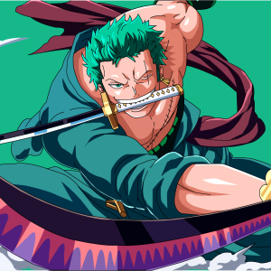
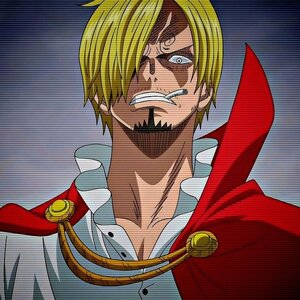
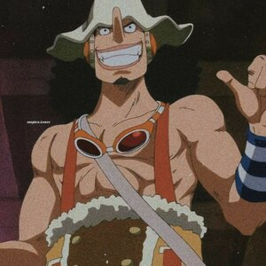
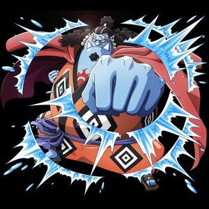
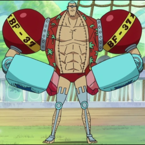
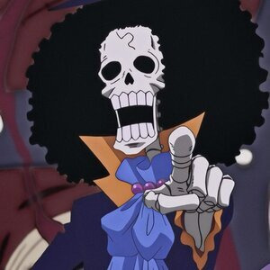

-
Luffy
Descrição
Monkey D. Luffy, também conhecido como "Luffy do Chapéu de Palha" e comumente como "Chapéu de Palha", usuario da Gomu-Gomu No Mi, é o fundador e capitão dos cada vez mais infames e poderosos Piratas do Chapéu de Palha, bem como o mais poderoso de seus melhores lutadores. Ele deseja encontrar o tesouro lendário deixado para trás pelo falecido Gol D. Roger e assim se tornar o Rei dos Piratas,
-
Zoro
Descrição
Esse é Roronoa Zoro, conhecido como caçador de piratas, o imediato do bando e e um mestre espadachim, primeiro homem a entrar no bando e decidido a ajudar Luffy se tornar o Rei dos Piratas
-
Sanji
Descrição
Esse é Vinsmoke Sanji, conhecido como perna negra, não utiliza nenhuma fruta, porem domina artes marciais e combate com armas, mas seu forte são seus chutes, que podem até mesmo o fazer voar, no navio seu papel é ser cozinheiro do bando. Também é o Quarto filho da familia Germa
-
Usopp
Descrição
"God" Usopp é o Atirador dos Piratas do Chapéu de Palha. Ele é o quarto membro da tripulação e o terceiro a entrar. Usopp é o filho de Yasopp e Banchina, membro do bando de Shanks o Ruivo
-
Jimbe
Descrição
Jinbe é um homem-peixe sendo um tubarão-baleia e um poderoso mestre do karatê Homem-Peixe. Era membro e segundo capitão dos Piratas do Sol. Chegou se tornar um Shichibukai, mas renunciou e hoje faz parte do bando dos Chapéus de Palha.
-
Franky
Descrição
Franky é o carpinteiro dos Piratas do Chapéu de Palha. Ele é um cyborg de 36 anos de Water 7 e foi introduzido na história como o líder da Família Franky, um grupo de desmantelamento de navios. Ele foi originalmente chamado de "Cutty Flam" até trocar seu nome original por seu apelido a pedidos de Iceburg para esconder sua identidade.
-
Brook
Descrição
Brook é o Músico dos Piratas do Chapéu de Palha. Ele é um esqueleto que os Chapéus de Palha encontraram a bordo de um navio fantasma depois de entrarem no Triângulo Florian. Ele é um usuário de Akuma no Mi que comeu a Yomi Yomi no Mi, o que o torna um pseudo-imortal por causa de seus poderes.